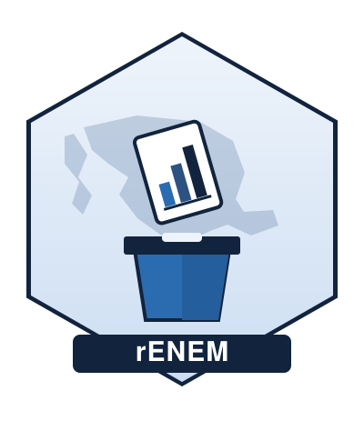

rENEM: Acceso, Limpieza y Análisis de Datos del ENEM
Source:R/rENEM-package.R
rENEM-package.RdEl Estudio Nacional Electoral de México (ENEM) es una serie de 10 encuestas post-electorales (1997, 2000, 2003, 2006, 2009, 2012, 2015, 2018, 2021, 2024), aplicadas a nivel nacional cada 3 años junto con las elecciones federales para Cámara de Diputados. 2018 fue un panel con 4 olas (pre y post electoral); el resto son de corte transversal post-electoral.
Details
rENEM provee dos niveles de acceso a los datos:
Un panel armonizado pequeño (variables comunes a las 10 olas: sexo, edad, ocupación en ISCO-08, ponderador, geografía) que se distribuye con el paquete para ejemplos y vignettes (
enem_load()).Los datos completos de cada ola, con todas sus variables originales, que se descargan bajo demanda y se cachean localmente (
enem_download(),enem_connect()).
Diseño muestral
Cada ola tiene una ficha de diseño accesible con enem_design(). Para
1997, 2000, 2003, 2006, 2009 y 2018 el diseño viene de la nota técnica
oficial. Para 2012, 2015, 2021 y 2024 no existe ficha metodológica
original, así que el diseño se reconstruyó a partir del cuestionario y de
las variables presentes en los datos (columna fuente = "inferido") — no
tiene el mismo nivel de certeza que las olas con ficha oficial.
Author
Maintainer: Daniel García gr.dedaniel@gmail.com